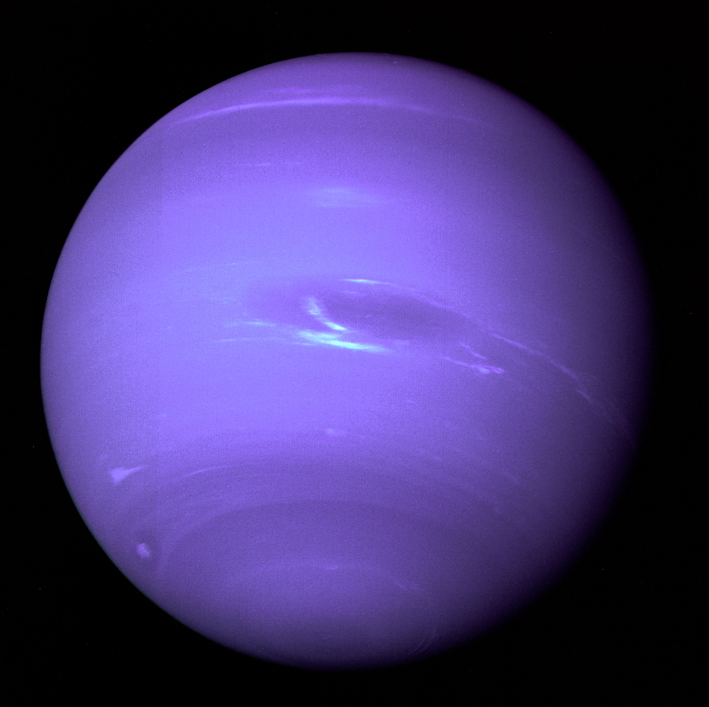

Нептун е газов гигант и е 8-та планета от слънчевата система. Носи името на римския бог на морето. Подобно на другите газови гиганти, Нептун няма твърда повържност, върху която може да да се ходи. Открит на 23 септември 1846 г., това е първата планета, чието съществуване е доказано чрез математически изчисления.
Атмосферата на Нептун е съставена основно от водород и хелий със следи от метан. Той е причината за синия цвят на планетата, но понеже е много по-ярък от този на Уран, който има същото количество метан, се смята, че има друга съставка, която му придава такъв наситен цвят. Нептун има най-силните ветрове в Слънчевата система, достигащи до скорост от 2100 км/ч.
Единственият апарат, посетил Нептун, е Вояджър 2, който се сближава максимално с планетата на 25 август 1989 г. При преминаването си е заснел в южното полукълбо Голямото тъмно петно, подобно на Голямото червено петно на Юпитер. Температурата на високите му облаци достига до −218 °C, една от най-ниските в Слънчевата система заради отдалечеността на планетата от Слънцето. Температурата в центъра на Нептун е около 7000 °C, което може да се сравни с тази на повърхността на Слънцето.

Ето някои данни за Нептун.
| Отдалеченост от Слънцето | 4 498 396 441 км. |
| Екваториален диаметър | 49 528 км. |
| Плътност спряма водата | 1,64 пъти |
| Продължителност на деня | 16 земни часа |
| Продължителност на годината | 164,8 земни години |
| Средна температура на повърхността | -214°C |
| Известни луни | 13 |